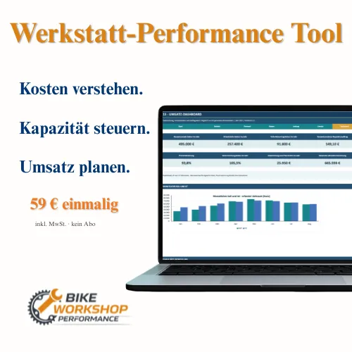

Werkstatt-Performance Tool für Fahrradfachbetriebe
Produktprofil · Marktplatz-Daten 2026-10-09 · Verkaufsseiten-Recherche 2026-10-09 · Kategorien: Business & Investment, Software, Finances
- Werkstatt-Performance Tool für Fahrradfachbetriebe ist ein/e Download in Business & Investment und Software, vertrieben über den Digistore24-Marktplatz von Anbieter markplenert7400, gelistet seit 2026-09-16.
- Listenpreis $55.46; Digistore24 meldet — Checkout-Konversion, — Stornierungsquote und 40 % Affiliate-Provision.
- Verdienst pro Verkauf (Affiliate): $22.18 (Anbieter-seitige Statistik, keine Prognose).
Interesse an Werkstatt-Performance Tool für Fahrradfachbetriebe? Aktueller Preis, Boni und Garantiebedingungen finden Sie auf der offiziellen Seite des Anbieters:
Offizielle Verkaufsseite ansehen
Affiliate-Link (Werbung) — wir verdienen ggf. eine Provision, ohne Mehrkosten für Sie.

Marktplatz-Daten
| Produkttyp | Download |
|---|---|
| Preis | $55.46 (Single payment) |
| Affiliate-Provision | 40 % |
| Garantie/Rückgabe | Laut Verkaufsseite des Anbieters — vor dem Kauf auf der offiziellen Seite prüfen |
| Anbieter | markplenert7400 (gelistet seit 2026-09-16) |
| Marktplatz-Statistiken* | Checkout-Konversion — · Stornoquote — · Verdienst/Verkauf $22.18 |
* Anbieter-seitige Statistiken von Digistore24; sie hängen von der Traffic-Qualität ab und sind keine Prognose.
Marktplatz-Beschreibung des Anbieters
Das Werkstatt-Performance Tool ist ein Excel-basiertes Controlling- und Planungswerkzeug speziell für Fahrradfachbetriebe mit eigener Werkstatt. Es unterstützt Betriebe dabei, Personalkosten, produktive Kapazität, Arbeitsumsatz, Teileumsatz und Jahresplanung strukturiert zusammenzuführen und wirtschaftlich auszuwerten. Käufer erhalten eine sofort einsetzbare Excel-Datei sowie eine ausgefüllte Must…
Von der Verkaufsseite des Anbieters
Seitentitel: Fahrradwerkstatt Kennzahlen & Wirtschaftlichkeit | Excel-Tool
Meta-Beschreibung: Excel-Tool für Fahrradwerkstätten: Kosten, Kapazität, Leistung, Umsatz, Soll-Ist und Forecast auswerten. 59 € einmalig, kein Abo.
Hauptüberschrift
Kennzahlen und Wirtschaftlichkeit Ihrer Fahrradwerkstatt
Abschnitts-Überschriften
- Kosten verstehen. Kapazität steuern. Umsatz planen.
- Für wen ist das Werkstatt-Performance Tool geeignet?
- Keine Zeit oder Lust auf monatliche Datenpflege?
- Werkstatt-Performance Tool
- 59 € einmalig inkl. MwSt. · kein Abo
Einstiegstext
Spezialisierte Unternehmensberatung für etablierte Fahrradbetriebe mit eigener Werkstatt
Das Werkstatt-Performance Tool verbindet Kosten, produktive Kapazität, Werkstattleistung, Umsatz und Jahresplanung in einer strukturierten Excel-Auswertung für Fahrradfachbetriebe.
Damit erkennen Sie nicht nur, wie viel Umsatz Ihre Werkstatt erzielt, sondern auch, welche Kosten und welche verfügbare Kapazität dahinterstehen und wie sich Soll, Ist und Jahreshochrechnung entwickeln.
Das Skript in diesem Modul kann Daten über Ihre Aktivitäten sammeln. Bitte überprüfen Sie die Details und akzeptieren Sie den Dienst, um den Inhalt anzuzeigen.
Fragen, die die Verkaufsseite beantwortet
- Sie besitzen das Werkstatt-Performance Tool bereits?
- Ist das eine Unternehmensberatung?
- Welche Software benötige ich?
- Muss ich alle Daten sofort vollständig eintragen?
- Welche Abrechnungsmodelle unterstützt das Tool?
- Stundensatz, AW-System, Pauschalen und Mischsystem. Werden meine Betriebsdaten an Bike Workshop Performance übertragen?
- Nein. Die Datei wird lokal bei Ihnen genutzt. Ihre eingetragenen Betriebsdaten werden nicht automatisch übertragen. Ersetzt das Tool meine Warenwirtschaft?
- Nein. Es ist ein Auswertungs- und Planungswerkzeug, kein Warenwirtschaftssystem. Gibt es laufende Kosten?
CTA-Buttons: „Startseite"
Recherche-Methode: rohes HTML · 881 Wörter · Qualität: rich · recherchiert am 2026-10-09. Vollständige Recherche-Datei (MD) ↗
Wie Produkte dieser Art geliefert werden
Allgemeiner Hinweis zu diesem Produkttyp (keine anbieterspezifische Anleitung): Download-Produkte werden digital geliefert: sofort nach dem Checkout erhalten Sie Downloadlinks (oder Zugang zu einem Mitgliederbereich) — kein physischer Versand. Für die genaue Anwendung von Werkstatt-Performance Tool für Fahrradfachbetriebe sind die offizielle Verkaufsseite und die enthaltenen Materialien maßgeblich.
Gut zu wissen
- Keine Garantie-Formulierung in unserer Recherche gefunden — bestätigen Sie das Rückgabefenster auf der offiziellen Seite, bevor Sie kaufen.
- Marktplatz-Zahlen (Preis, Provision, Konversion, Stornoquote) — Quelle: offizielle Digistore24-Marktplatz-API (Affiliate-Sicht), Stand 2026-10-09. Gegenprüfung: Marktplatz-Suche nach Produkt-ID 733334.
- Verkaufsseiten-Zitate — Quelle: https://www.bikeworkshop-performance.de/werkstatt-performance-tool/, abgerufen 2026-10-09 (Methode: rohes HTML). Verify: offizielle Seite öffnen.
- Garantie / Rückgabe — vom Anbieter festgelegt; vor dem Kauf auf der Verkaufsseite bestätigen.
- Nicht von uns geprüft: Produktqualität, Ergebnisse, Testimonials — kein Praxistest für dieses Listing durchgeführt.
Häufige Fragen zu Werkstatt-Performance Tool für Fahrradfachbetriebe
Antworten aus dem Marktplatz-Snapshot (2026-10-09) und der Verkaufsseiten-Recherche (2026-10-09); Anbieteraussagen sind inline gekennzeichnet.
Was ist Werkstatt-Performance Tool für Fahrradfachbetriebe?
Werkstatt-Performance Tool für Fahrradfachbetriebe ist ein Angebot des Typs „Download" im Digistore24-Marktplatz, Anbieter: markplenert7400, gelistet seit 2026-09-16. Eingepflegt unter Business & Investment und Software. Digistore24 wickelt Checkout, Lieferung und Rückgaben ab.
Wie viel kostet Werkstatt-Performance Tool für Fahrradfachbetriebe?
Der Digistore24-Marktplatz listet es für $55.46 (single payment). Preise legt der Anbieter fest und können sich ändern — der Marktplatz-Eintrag oben zeigt den Schnappschuss; die offizielle Verkaufsseite zeigt den aktuellen Preis.
Gibt es eine Geld-zurück-Garantie für Werkstatt-Performance Tool für Fahrradfachbetriebe?
Unsere Verkaufsseiten-Recherche hat keine explizite Garantie-Formulierung gefunden. Viele Digistore24-Produkte bieten 60 Tage Geld-zurück, aber das legt jeder Anbieter selbst fest — bestätigen Sie es auf der offiziellen Verkaufsseite, bevor Sie kaufen.
Ist Werkstatt-Performance Tool für Fahrradfachbetriebe seriös?
Wir bewerten keine Seriosität — wir veröffentlichen überprüfbare Zahlen: Anbieter markplenert7400 (gelistet seit 2026-09-16), Checkout-Konversion —, Stornoquote —, Affiliate-Verdienst/Verkauf $22.18 (alles Anbieter-seitige Marktplatz-Statistiken). Lesen Sie unsere 6-Punkte-Bewertungsmethode und entscheiden Sie anhand der Zahlen — oder diskutieren Sie Werkstatt-Performance Tool für Fahrradfachbetriebe auf GitHub.
Wo kann ich Werkstatt-Performance Tool für Fahrradfachbetriebe sicher kaufen?
Nur über die offizielle Verkaufsseite, die auf dieser Seite verlinkt ist (Checkout und Rückgaben laufen über Digistore24). Prüfen Sie dort Preis und Garantie vor der Bestellung. Der Link ist ein Affiliate-Link — der Kauf unterstützt diese Website ohne Mehrkosten für Sie.
Wie erhalte ich Werkstatt-Performance Tool für Fahrradfachbetriebe nach der Zahlung?
Der Checkout läuft über Digistore24: Nach der Zahlung erhalten Sie Ihren Zugang oder Download per E-Mail und in Ihrem Digistore24-Kundenkonto. Lieferdetails für diesen Produkttyp: Download-Produkte werden digital geliefert: sofort nach dem Checkout erhalten Sie Downloadlinks (oder Zugang zu einem Mitgliederbereich) — kein physischer Versand. Bei Problemen kann der Digistore24-Käufersupport Ihre Bestellung wiederherstellen.
Ähnliche Angebote in Business & Investment

SHOWUP 3 Monate Strategie- und Umsetzungsbegleitung für dein Business. Du steckst Zeit und Arbeit in deinen Content, feilst an Angeboten und denkst über deine P

Bewerbe die Nummer #1 Online NFT & Web3 Masterclass für NFT & Web3 Investoren und Anleger. Beschreibung: Eine Masterclass. Eine Plattform. Alles dabei.

498,50 € Provision pro Verkauf – plus Folgeprovisionen Du schickst den Interessenten. Unser professioneller Nachfolge-Workshop übernimmt den Verkauf. Thema: Imm

Verdiene 50% Provision mit der #1 Masterclass für Online-Kurs-Business Promote das kostenlose Online Training „Online Kurse erstellen und passiv verkaufen mit K
Weitere Angebote von markplenert7400
Werkstatt-Performance Tool für Fahrradfachbetriebe ist auch gelistet in
Software (155 Produkte) · Finanzen (83 Produkte)
Ähnliche Preislage in Business & Investment

Das große Mentoring Paket für Hinterbliebene Das Rundum-Paket für Deine finanzielle Klarheit: persönliche Begleitung kombiniert mit fundiertem Fachwissen. Im Me

Mit Musik Geld verdienen, ohne musikalisch zu sein und vollkommen anonym! 50% Provision für dich im gesamten Funnel! Über 400€ im gesamten Funnel für dich als P

Individuelles Mentoring – Einzelstunde Genau hier hilft dir kein allgemeines Wissen mehr. Was passiert im Mentoring deine Situation wird angeschaut Zusammenhäng

!!!BRANDNEUE MOBILE VSL 2025 VERDOPPELT DEINE CONVERSIONRATEN!!! Der Money Magnet 2.0 60% Provision auf das Frontend Produkt - 50% Provision auf die Upsells. Bi
Ähnliche Suchanfragen
Wo Sie es sich ansehen können
Wo Sie es sich ansehen können
Aktuelle Preise, Garantie und Boni finden Sie auf der offiziellen Verkaufsseite:
Offizielle Verkaufsseite ansehen
Das ist ein Affiliate-Link (Werbung) — kaufen Sie darüber, verdienen wir ggf. eine Provision, ohne Mehrkosten für Sie.
Quellen & weiterführende Informationen
- Offizielle Verkaufsseite (aktueller Preis, Garantie, Boni): www.bikeworkshop-performance.de/werkstatt-performance-tool/ (Affiliate-Link)
- Öffentliche Digistore24-Produktseite: digistore24.com/product/733334
- Vollständige Recherche-Datei (Markdown, versioniert): content/products/59292-werkstatt-performance-tool-f-r-fahrradfachbetriebe.md
- Marktplatz-Kategorie: Business & Investment
Wie wir Produkte wie Werkstatt-Performance Tool für Fahrradfachbetriebe bewerten
Sechs Prüfungen, ausschließlich mit offiziellen Marktplatz-Zahlen. Die vollständige Bewertungsmethode lesen · unsere Recherche-Standards & Kennzeichnung.
Fragen oder eigene Erfahrungen mit Werkstatt-Performance Tool für Fahrradfachbetriebe?
Praxis-Tests veröffentlichen wir erst, nachdem wir ein Produkt selbst gekauft haben — aber Ihre Erfahrung hilft anderen Lesern: Diskussion zu Werkstatt-Performance Tool für Fahrradfachbetriebe auf GitHub starten/verfolgen. Falsche Zahl gefunden? Korrektur melden — jede Seite zeigt ihre Datenstände, Korrekturen gelten für die ganze Website.